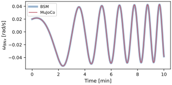
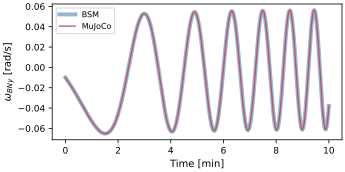
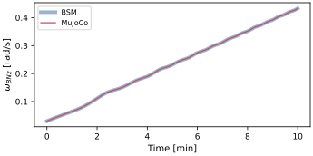
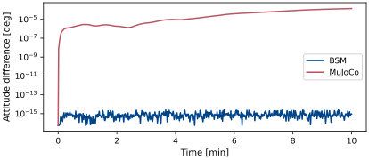
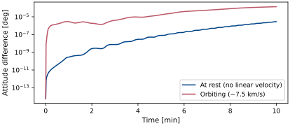
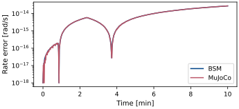
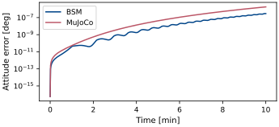

scenarioCompareTorque
Second scenario in the dynamics-engine comparison series (see scenarioCompareOrbit for the introduction).
This scenario extends the translational baseline to full six-degree-of-freedom motion with a constant body-frame torque and a non-zero, off-principal-axis initial angular velocity, exercising the coupled gyroscopic rotational dynamics \([I]\dot{\pmb\omega} = -\pmb\omega\times[I]\pmb\omega + {\bf L}\).
On the BSM side the torque is applied with an C++ Module: extForceTorque dynamic effector
attached to the C++ Module: spacecraft hub. On the MuJoCo side the body is free (a single
free joint) and the torque is produced by an MJTorqueActuator placed at the body
origin site. Because that site rotates with the body, a constant torque_S is a
constant body-frame torque, matching the BSM side exactly.
Each engine is run twice, both with a fixed-step RK4 integrator at a small enough time step (0.1 s) that time-stepping truncation is well below the effect of interest:
orbiting – on a Keplerian orbit with point-mass Earth gravity (C++ Module: spacecraft gravity effector; MuJoCo C++ Module: NBodyGravity), carrying the ~7.5 km/s orbital velocity; and
at rest – at the origin with zero linear velocity and no gravity, i.e. pure rotation under the body torque.
For this single compact body neither gravity nor the translation it induces can torque
the body about its center of mass, so the attitude must be identical in both cases. BSM
passes exactly: its attitude is bit-for-bit the same orbiting or at rest, because it
integrates attitude about the body and never references the inertial state. MuJoCo carries
a small (\(\sim 10^{-6}\) rad) spurious attitude change between the two cases that does
not shrink as the step is reduced. MuJoCo 3.11.0 forms the spatial bias force in mj_rne
as \({\bf v}\times^*([I]{\bf v})\). For pure translation about the body center of mass,
the rotational part contains the identically-zero term
\({\bf v}_{\rm lin}\times(m{\bf v}_{\rm lin})\), evaluated as the difference of two
rounded \(\mathcal{O}(m|{\bf v}_{\rm lin}|^2)\) products. Directly recording
qfrc_bias strongly supports this term as the source of the attitude change.
Note
At 7.5 km/s along the generic direction \([2,-3,6]/7\), a nonrotating free body
has an initial rotational qfrc_bias of
\([-3.11\times10^{-7},\,1.56\times10^{-6},\,7.82\times10^{-7}]\) N m. The same body moving
along a coordinate axis has zero bias and zero attitude drift. In a torque-free,
nonrotating propagation, each factor-of-two increase in speed multiplies the 600 s
attitude error by approximately four; doubling the mass multiplies it by approximately
two. These controls match the \(m|{\bf v}|^2\) cancellation-error scale.
Attitudes are compared by the principal rotation angle of the relative direction cosine
matrix, \(4\,\arctan(|\pmb\sigma_{\rm rel}|)\), rather than by differencing attitude
parameters: BSM integrates a Modified Rodrigues Parameter set (sigma_BN) while MuJoCo
integrates a free-joint quaternion, and the principal angle is parameterization-invariant
and the physically meaningful pointing error. This form stays well conditioned for small
angles, unlike \(\arccos((\mathrm{tr}-1)/2)\).
The MuJoCo scene runs with highOrderAttitudeIntegration so the free-joint quaternion is
advanced at the integrator’s full order, matching BSM’s MRP attitude order. MuJoCo’s default
single exponential map of the stage-averaged body rate is only second-order on SO(3), which
would otherwise dominate the cross-engine attitude difference.
An independent control restricts the initial rate and torque to the body z principal axis. The gyroscopic cross term then vanishes, giving the exact solution
Both engines are compared directly with these rate and attitude histories.
The script is found in the folder basilisk/examples/dynamicsComparison and executed
by using:
python3 scenarioCompareTorque.py
Illustration of Simulation Results
The body angular velocity histories from the two engines overlie one another.



Each engine’s attitude change between the orbiting body and the same body at rest should be zero, since motion cannot torque the body about its center of mass. BSM sits at machine precision (\(\sim 10^{-16}\) rad), identical orbiting or at rest; MuJoCo sits about ten orders higher (\(\sim 10^{-6}\) rad). The gap does not close as the time step is reduced, identifying it as round-off in MuJoCo’s gyroscopic bias rather than a time-stepping error.

The cross-engine attitude difference (BSM versus MuJoCo, principal angle of the relative DCM) shows the same effect directly. At rest the two formulations agree at the RK4 truncation floor (\(\sim 10^{-8}\) rad); orbiting, the difference rises to the \(\sim 10^{-6}\) rad round-off the orbital velocity injects into MuJoCo.

The principal-axis control compares each engine directly with the closed-form rate and attitude.


Runtime cost
Wall-clock cost of propagating this scenario with each engine, reported as the median
of five measured trials after one discarded warm-up. Model setup is excluded. Both the
absolute times and speedup ratio are specific to the machine and build.
Generate the optional local CSV with
make -C docs comparison-runtime-tables; see
scenarioCompareOrbit for the benchmark requirements and interpretation.
Next comparison: scenarioCompareRwPanels adds reaction wheels and hinged flexible appendages.
- scenarioCompareTorque.buildBSM(mu, dt, tf, recordDt, withGravity=True, record=True, torque_B=(0.2, -0.3, 0.4), omega0_B=(0.02, -0.01, 0.03))[source]
Build the Backsubstitution torque simulation without propagating it.
- Parameters:
mu (float) – gravitational parameter [m^3/s^2]
dt (float) – integrator time step [s]
tf (float) – final simulation time [s]
recordDt (float) – recorder sampling period [s]
withGravity (bool, optional) – if True, place the body on a Keplerian orbit with point-mass Earth gravity (the “orbiting” case). If False, start it at rest at the origin with no gravity (the “at rest” case: pure rotation under the body torque). Neither gravity nor the induced translation can torque the body about its center of mass, so the attitude history is identical either way. Defaults to True.
record (bool, optional) – attach the state recorder. Defaults to True.
torque_B (tuple, optional) – constant body-frame torque [N*m].
omega0_B (tuple, optional) – initial body rate [rad/s].
- Returns:
(simulation, recorder, handles).- Return type:
tuple
- scenarioCompareTorque.buildMujoco(mu, dt, tf, recordDt, withGravity=True, record=True, torque_B=(0.2, -0.3, 0.4), omega0_B=(0.02, -0.01, 0.03))[source]
Build the MuJoCo torque simulation without propagating it.
- Parameters:
mu (float) – gravitational parameter [m^3/s^2]
dt (float) – integrator time step [s]
tf (float) – final simulation time [s]
recordDt (float) – recorder sampling period [s]
withGravity (bool, optional) – if True, place the body on the Keplerian orbit with the same point-mass Earth field via C++ Module: NBodyGravity (the “orbiting” case). If False, start it at rest at the origin with no gravity (the “at rest” case). For this compact single body gravity is a pure center-of-mass force with no gravity-gradient torque, so the attitude is identical either way. Defaults to True.
record (bool, optional) – attach the state recorder. Defaults to True.
torque_B (tuple, optional) – constant body-frame torque [N*m].
omega0_B (tuple, optional) – initial body rate [rad/s].
- Returns:
(simulation, recorder, handles).- Return type:
tuple
- scenarioCompareTorque.initialOrbitState(mu)[source]
Return the initial inertial position and velocity for the orbit.
- Parameters:
mu (float) – gravitational parameter [m^3/s^2]
- Returns:
(rN, vN)position [m] and velocity [m/s].- Return type:
tuple
- scenarioCompareTorque.mujocoModel(mass=750.0, inertiaDiag=(900.0, 800.0, 600.0))[source]
Return the MJCF model string for a single free rigid body.
- Parameters:
mass (float, optional) – body mass [kg].
inertiaDiag (tuple, optional) – principal inertia values [kg*m^2].
- scenarioCompareTorque.plotResults(timeAxis, omegaBSM, omegaMujoco, attError, attErrorRest, bsmMotionAtt, mujocoMotionAtt, analyticTime, bsmAnalyticRateError, bsmAnalyticAttError, mujocoAnalyticRateError, mujocoAnalyticAttError)[source]
Build the scenario figures.
- Parameters:
timeAxis (numpy.ndarray) – sample times [s]
omegaBSM (numpy.ndarray) – BSM body-rate history [rad/s]
omegaMujoco (numpy.ndarray) – MuJoCo body-rate history [rad/s] (or None)
attError (numpy.ndarray) – cross-engine attitude error, orbiting [rad] (or None)
attErrorRest (numpy.ndarray) – cross-engine attitude error, at rest [rad] (or None)
bsmMotionAtt (numpy.ndarray) – BSM attitude change, orbiting vs at rest [rad]
mujocoMotionAtt (numpy.ndarray) – MuJoCo attitude change, orbiting vs at rest [rad] (or None)
analyticTime (numpy.ndarray) – principal-axis control sample times [s].
bsmAnalyticRateError (numpy.ndarray) – BSM analytic rate error [rad/s].
bsmAnalyticAttError (numpy.ndarray) – BSM analytic attitude error [rad].
mujocoAnalyticRateError (numpy.ndarray) – MuJoCo analytic rate error [rad/s].
mujocoAnalyticAttError (numpy.ndarray) – MuJoCo analytic attitude error [rad].
- Returns:
mapping from figure name to matplotlib figure.
- Return type:
dict
- scenarioCompareTorque.principalAxisAnalyticSolution(timeAxis)[source]
Return the exact body rate and rotation angle for the principal-axis control.
- scenarioCompareTorque.principalAxisAttitudeError(sigmaHist, theta)[source]
Return the principal-angle error relative to the exact principal-axis attitude.
- scenarioCompareTorque.relativePrincipalAngle(sigmaBSM, sigmaMujoco)[source]
Per-sample principal rotation angle between two MRP attitude histories.
- Parameters:
sigmaBSM (numpy.ndarray) – BSM MRP history, shape
(N, 3)sigmaMujoco (numpy.ndarray) – MuJoCo MRP history, shape
(N, 3)
- Returns:
principal angle per sample [rad].
- Return type:
numpy.ndarray
- scenarioCompareTorque.run(showPlots=False, saveJson=False, saveTiming=False, resultsDir=None)[source]
Main function, see scenario description.
- Parameters:
showPlots (bool, optional) – if True, plot and show the simulation results. Defaults to False.
saveJson (bool, optional) – if True, write the comparison metrics to
results/scenarioCompareTorque.json. Defaults to False.saveTiming (bool, optional) – if True, measure the BSM-vs-MJScene wall-clock cost of this scenario and write
results/scenarioCompareTorque_runtime.csv. Defaults to False.resultsDir (str, optional) – explicit artifact directory. Defaults to the scenario
resultsfolder.
- Returns:
mapping from figure name to matplotlib figure.
- Return type:
dict
- scenarioCompareTorque.runBSM(mu, dt, tf, recordDt, withGravity=True, torque_B=(0.2, -0.3, 0.4), omega0_B=(0.02, -0.01, 0.03))[source]
Propagate the torqued body with the Backsubstitution C++ Module: spacecraft.
- scenarioCompareTorque.runMujoco(mu, dt, tf, recordDt, withGravity=True, torque_B=(0.2, -0.3, 0.4), omega0_B=(0.02, -0.01, 0.03))[source]
Propagate the same torqued body with the MJScene.
- scenarioCompareTorque.writeJsonSummary(timeAxis, omegaBSM, omegaMujoco, attError, attErrorRest, bsmMotionAtt, mujocoMotionAtt, bsmAnalyticRateError, bsmAnalyticAttError, mujocoAnalyticRateError, mujocoAnalyticAttError, targetResults)[source]
Write a JSON summary of the comparison metrics to the
resultsfolder.- Parameters:
timeAxis (numpy.ndarray) – sample times [s]
omegaBSM (numpy.ndarray) – BSM body-rate history [rad/s]
omegaMujoco (numpy.ndarray) – MuJoCo body-rate history [rad/s] (or None)
attError (numpy.ndarray) – cross-engine attitude error, orbiting [rad] (or None)
attErrorRest (numpy.ndarray) – cross-engine attitude error, at rest [rad] (or None)
bsmMotionAtt (numpy.ndarray) – BSM attitude change, orbiting vs at rest [rad]
mujocoMotionAtt (numpy.ndarray) – MuJoCo attitude change, orbiting vs at rest [rad] (or None). The exact answer is zero (motion cannot torque the body); the BSM value is at machine precision, the MuJoCo value at its gyroscopic-bias round-off.
bsmAnalyticRateError (numpy.ndarray) – BSM rate error in the analytic control [rad/s].
bsmAnalyticAttError (numpy.ndarray) – BSM attitude error in the analytic control [rad].
mujocoAnalyticRateError (numpy.ndarray) – MuJoCo analytic-control rate error [rad/s].
mujocoAnalyticAttError (numpy.ndarray) – MuJoCo analytic-control attitude error [rad].
targetResults (str) – directory for the JSON artifact